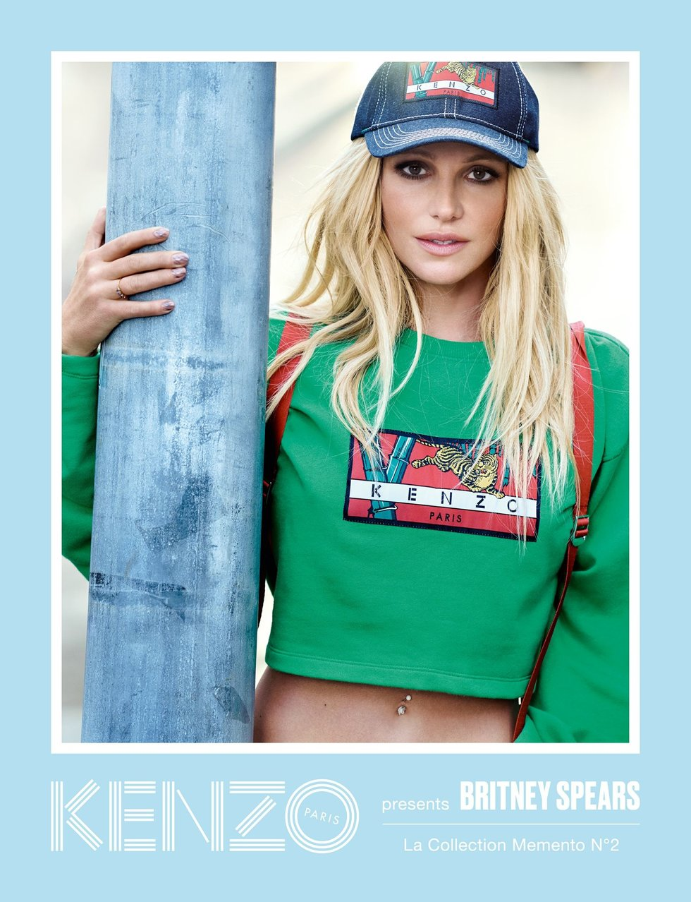
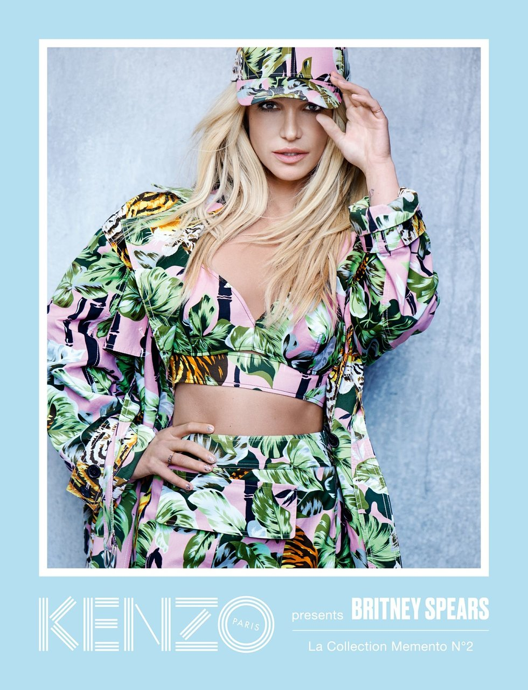
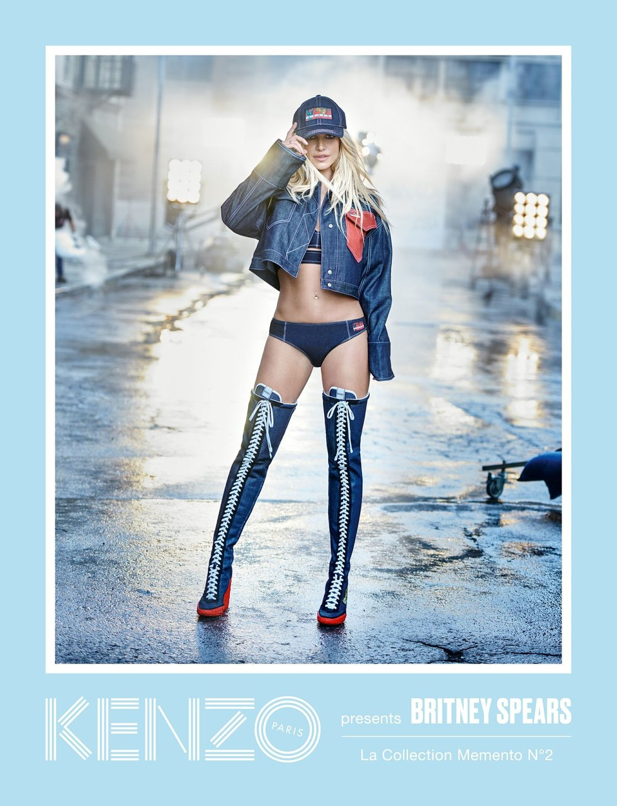

#Fashion
Britney Spears, the One and Only, Is the Face of a New Kenzo Campaign
By Claire Valentine | 20 March

The one and only Britney Spears has been revealed as the face of a new Kenzo campaign. Kenzo's La Collection Memento line draws on the house's history and archives, with creative directors Carol Lim and Humberto Leon finding inspiration in creations by label founder Kenzo Takada. La Collection Memento N°2, of which Spears is the face, focuses on denim and was influenced by the 1986 Paris runway debut of Kenzo Jeans. Shot by fashion photographer Peter Lindbergh (whose British Vogue cover of Linda, Naomi, Cindy, Tatiana and Christy sparked the age of the supermodel), the theme of the collection is "Icons," which makes the Spears-Kenzo combo a perfect fit.
"Britney is certainly an icon and the quintessential queen of denim," a release said.
La Collection Memento N°2 which will be available online and in stores March 21.
Images Courtesy of Kenzo